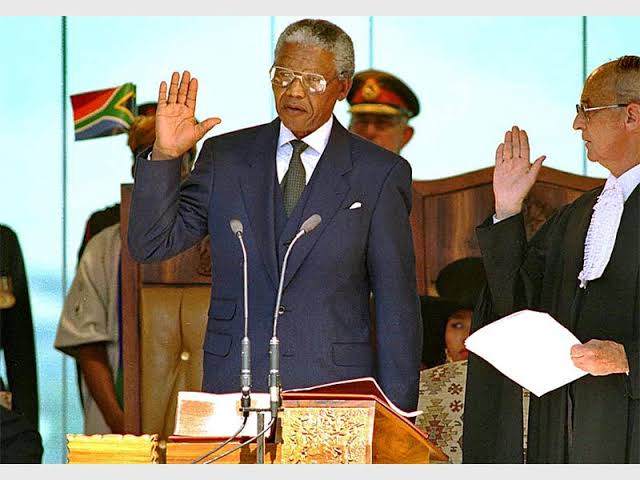

Nelson Rolihlahla Mandela
The first black president in South Africa

Nelson Rolihlahla Mandela.Near the mic,he was delivering his first inauguration speach as the first black president about a way forward for all south african.He briefly said "the time for the healing of the wounds has come,the moment to bridge the chasms that divide us has come and also the time to buid is upon us".
The time line of Nelson Mandela
- 1918 july 18th- Rolihlahla Mandela was born at Mvezo in the Transkei.
- 1925- He attended primary school near Qunu and where he received the name 'Nelson' from a teacher.
- 1939-Enroled at the University College of Fort Hare, in Alice.
- 1942- Completed BA throught the University of South Africa(UNISA) and started attending African National Congress(ANC) meetings informally.
- 1943- Graduated with BA from Fort Hare and enrolled for an LLB at Wits University.
- 1944- He CO-found the ANC youth league and married Evelyn Ntoko Mase.they had 4 children.
- 1948- Elected national secretary of the ANCYL.
- 1951- Elected President of the ANCYL.
- 1952-Arrested and charged for violating the suppression of communism Act and sentenced to nine months imprisonment,elected Transvaal ANC President,opened law firm with oliver Tambo- the only black law firm in johannesburg.
- 1953- Devises the M-plan for ANC's future underground operation.
- 1958- Devorced Evelyn Mase and Marries Nomzamo Winnie Madikizela which had 2 daughter.
- 1960 March 30th- A state of emergency is imposed and he is among thousands detained.
- 1960 April 8th- The ANC is banned.
- 1961- Goes underground where umkhondo wesizwe is formed.
- 1962 January 11th- Leaves the country for military training and to garner support for ANC.
- 1962 July 23rd- Returns to South Africa.
- 1962 August 5th- Arrested near Howick in Kwazulu-Natal.
- 1962 November 7th- Sentenced to 5 years in prison for incitement and leaving the country without a passport.
- 1963 May 27th- Sent to Robben Island.
- 1963 October 9th- Appears in court for first time in what becomes known as the Rivonia Trial,with Walter Sisulu,Denis Goldberg,Govan Mbeki,Ahmed kathrada,Lionel Rusty and many more.
- 1963 December 3- Pleads not guilty to sabotage in the Rivonia Trial.
- 1964 June 12th- Sentenced to life imprisonment in Robben Island.
- 1982 March 31st- MAndela,Sisulu,Raymond Mhlaba and Andrew Mlangeni were sent to Pollsmoor Prison.
- 1985 November 3rd- Admitted to the volks hospital for prostate surgery.
- 1988 December 7th- Moved to Victor Verster Prison in Paarl where he was held for 14 months in a cottage.
- 1990 February 2nd- ANC is unbanned.
- 1990 February 11th- He was released.
- 1990 March 2nd- Elected ANC Deputy President.
- 1993 December 10th- Awwarded the Nobel Peace prize with president FW de klerk.
- 1994 April 27th- Votes for the first time in his life.
- 1994 May 9th-Elected by Parliament as first president of a democratic South Africa .
- 1994 December 14th- Launched his autobiography Long Walk to Freedom.
- 1995- Establishes the Nelson Mandela Children's Fund.
- 1996- Divorces Winnie Mandela.
- 1999- Steps down after one term as president,establishes Nelson Mandela Foundation.
- 2001- Diagnosed with prostate cancer.
- 2003- Establishes Nelson Mandela Rhodes Foundation.
- 2007 April 13th- Attends the installation of his grandson Mandla as chief of the Mvezo traditional Council.
- 2009- Votes for the fourth time in his life,attens the inauguration of Presiden Jacob Zuma on 9 may and witnesses zuma's first state of nation Address.
- 2010- Formally presented with the FIFA World Cup trophy before it embarks on a tour of South Africa.
- 2011 January- Admitted to hospital in johannesburg Discharged after two nights.
- 2011 June 27th- His book Nelson Mandela by himself is launched.
- 2013- Spends New Year's Day with members of his family in johannesburg.
- 2013 March 9th-Admitted to hospital.
- 2013 July 18th-Spends his 95th birthday in hospital.
- 2013 September 1st- Dischared from hospital.
- 2013 December 5th- Passed away at home in johannesburg .
Mandela was known and loved around the world for his commitment to peace,negotiation and reconciliation.He was South Afican's first democratically elected president (1994-1999).Mandela was an anti-apartheid revolutionary and political leader as well as a philanthropist with an abiding love for children.